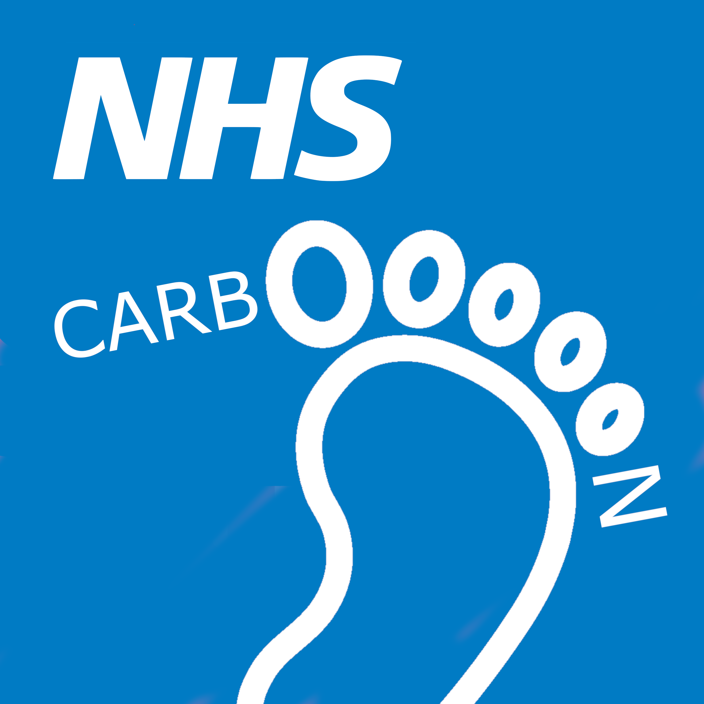
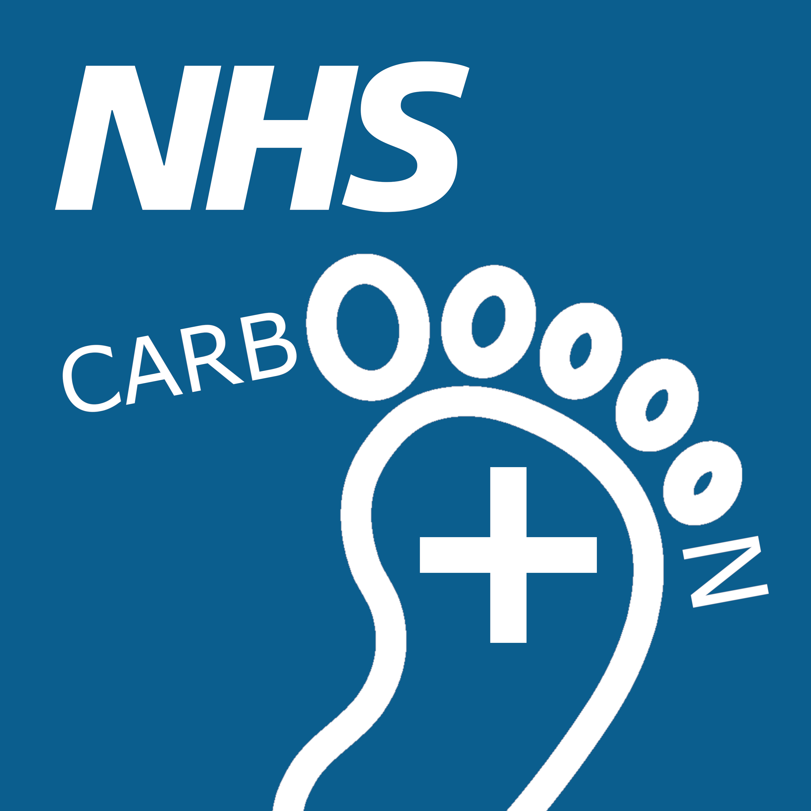

--- 
layout: home_page
---

<div class="nhsuk-width-container">
    <main class="nhsuk-main-wrapper" id="maincontent">
        <div class="nhsuk-grid-row">
            <div class="nhsuk-grid-column-full">

                <!--<div class="nhsuk-card">
                    <div class="nhsuk-card__content">-->
                        <!--<h3 class="nhsuk-card__heading"></h3>--><!--
                        <p class="nhsuk-card__description">The *NHS Emission Quantification Recipe Book* is a transparent, collaborative and evidence-based approach to establishing a standardised means of calculating emissions associated with NHS Carbon Footprint and Carbon Footprint Plus themes set out by the [Greener NHS](https://www.england.nhs.uk/greenernhs/) in October 2020 (Figure 1). The NHS Emissions Quantification Recipe Book has been developed by Dr Dan Wright of the Sustainability Team at [Kent Community Health NHS Foundation Trust](https://www.kentcht.nhs.uk/) in collaboration with members of the NHS Kent & Medway Integrated Care System.</p>
                    </div>
                </div>-->

                <h2>What is the NHS Emission Quantification Recipe Book?</h2>
                <p>The NHS Emission Quantification Recipe Book (NHS-EQRB) is a transparent, collaborative and evidence-based approach to establishing a standardised means of calculating emissions associated with NHS Carbon Footprint and Carbon Footprint Plus themes set out by the <a href="https://www.england.nhs.uk/greenernhs/">Greener NHS</a> in October 2020. The NHS-EQRB has been developed by Dr Dan Wright of the Sustainability Team at <a href="https://www.kentcht.nhs.uk/">Kent Community Health NHS Foundation Trust</a> in collaboration with members of the <a href="https://www.kentandmedway.icb.nhs.uk/">NHS Kent & Medway Integrated Care System</a>. </p>

                <div class="nhsuk-do-dont-list">
                    <h3 class="nhsuk-do-dont-list__label">What does the NHS-EQRB offer?</h3>
                    <ul class="nhsuk-list nhsuk-list--tick">
                        <li>
                            <svg class="nhsuk-icon nhsuk-icon__tick" xmlns="http://www.w3.org/2000/svg" viewBox="0 0 24 24" fill="none" aria-hidden="true">
                <path stroke-width="4" stroke-linecap="round" d="M18.4 7.8l-8.5 8.4L5.6 12"></path>
              </svg> Clear instructions for calculating emissions dependent on the level of data available 
                        </li>
                        <li>
                            <svg class="nhsuk-icon nhsuk-icon__tick" xmlns="http://www.w3.org/2000/svg" viewBox="0 0 24 24" fill="none" aria-hidden="true">
                <path stroke-width="4" stroke-linecap="round" d="M18.4 7.8l-8.5 8.4L5.6 12"></path>
              </svg> Worked examples for using the calculations in process
                        </li>
                        <li>
                            <svg class="nhsuk-icon nhsuk-icon__tick" xmlns="http://www.w3.org/2000/svg" viewBox="0 0 24 24" fill="none" aria-hidden="true">
                <path stroke-width="4" stroke-linecap="round" d="M18.4 7.8l-8.5 8.4L5.6 12"></path>
              </svg> An opportunity for colleague upskilling and bringing calculation expertise 'in-house'
                        </li>
                        <li>
                            <svg class="nhsuk-icon nhsuk-icon__tick" xmlns="http://www.w3.org/2000/svg" viewBox="0 0 24 24" fill="none" aria-hidden="true">
                <path stroke-width="4" stroke-linecap="round" d="M18.4 7.8l-8.5 8.4L5.6 12"></path>
              </svg> A curated resources list for services and tooling available to support calcuations 
                        </li>
                        <!--<li>
                            <svg class="nhsuk-icon nhsuk-icon__tick" xmlns="http://www.w3.org/2000/svg" viewBox="0 0 24 24" fill="none" aria-hidden="true">
                <path stroke-width="4" stroke-linecap="round" d="M18.4 7.8l-8.5 8.4L5.6 12"></path>
              </svg> five
                        </li>-->
                    </ul>
                </div>

                <h3>Find the recipe you need</h3>
                <ul class="nhsuk-grid-row nhsuk-card-group">
                    <li class="nhsuk-grid-column-one-half nhsuk-card-group__item">
                        <div class="nhsuk-card nhsuk-card--clickable">
                            
                            <div class="nhsuk-card__content">
                                <h2 class="nhsuk-card__heading nhsuk-heading-m">
                                    <a class="nhsuk-card__link" href="">NHS Carbon Footprint Recipes</a>
                                </h2>
                                <p>For emissions that we directly control or have a high level of influence over.</p>
                            </div>
                        </div>
                    </li>
                    <li class="nhsuk-grid-column-one-half nhsuk-card-group__item">
                        <div class="nhsuk-card nhsuk-card--clickable">
                            
                            <div class="nhsuk-card__content">
                                <h2 class="nhsuk-card__heading nhsuk-heading-m">
                                    <a class="nhsuk-card__link" href="">NHS Carbon Footprint Plus Recipes</a>
                                </h2>
                                <p>For emissions associated with our supply chain, colleague commuting and patient or visitor travel.</p>
                            </div>
                        </div>
                    </li>
                </ul>
            </div>
        </div>
    </main>
</div>